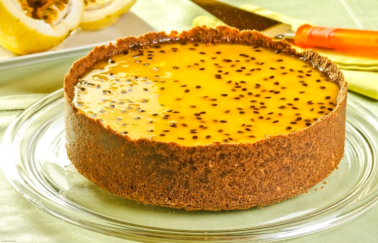

Ingredientes
1 base de biscoito
1 lata de leite condensado
1 lata de creme de leite
Polpa de maracujá a gosto
Modo de Preparo
Misture leite condensado, creme de leite e polpa
Despeje sobre a base e leve à geladeira por 4h
⬅ Voltar